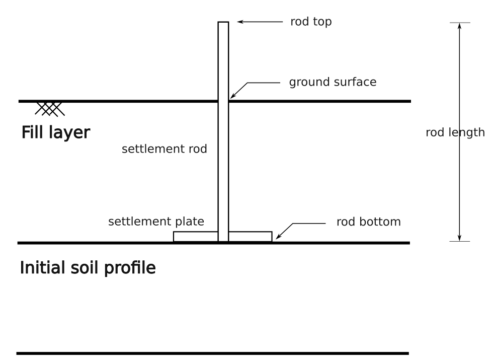

Reference
Settlement Rod Measurement
A settlement rod device consists of a rod and a (bottom) settlement plate (see figure below). The measurements are taken at the top of the rod (i.e. rod_top) and at the ground surface and since the rod length is known, the settlement of at the bottom of the rod (i.e. rod_bottom) can be also derived.
The class SettlementRodMeasurement presented below stores the data of a single settlement rod measurement.
- class baec.measurements.settlement_rod_measurement.SettlementRodMeasurement(project, device, object_id, date_time, coordinate_reference_systems, rod_top_x, rod_top_y, rod_top_z, rod_length, rod_bottom_z, ground_surface_z, status_messages, temperature=None, voltage=None)[source]
Represents a single settlement rod measurement.
- __init__(project, device, object_id, date_time, coordinate_reference_systems, rod_top_x, rod_top_y, rod_top_z, rod_length, rod_bottom_z, ground_surface_z, status_messages, temperature=None, voltage=None)[source]
Initializes a SettlementRodMeasurement object.
- Parameters:
project (Project) – The project which the measurement belongs to.
device (MeasurementDevice) – The measurement device.
object_id (str) – The ID of the measured object.
date_time (datetime.datetime) – The date and time of the measurement.
coordinate_reference_systems (CoordinateReferenceSystems) – The horizontal (X, Y) and vertical (Z) coordinate reference systems (CRS) of the spatial measurements.
rod_top_x (float) – The horizontal X-coordinate of the top of the settlement rod. Units are according to the coordinate_reference_systems.
rod_top_y (float) – The horizontal Y-coordinate of the top of the settlement rod. Units are according to the coordinate_reference_systems.
rod_top_z (float) – The vertical Z-coordinate of the top of the settlement rod. It is the top of the settlement rod. Units and datum are according to the coordinate_reference_systems.
rod_length (float) – The length of the settlement rod including the thickness of the settlement plate. It is in principle the vertical distance between the top of the settlement rod and the bottom of the settlement plate. Units are according to the coordinate_reference_systems.
rod_bottom_z (float) – The corrected Z-coordinate at the bottom of the settlement rod (coincides with bottom of settlement plate). Note that the bottom of the plate is in principle the original ground surface. Units and datum according to the coordinate_reference_systems.
ground_surface_z (float) – The Z-coordinate of the ground surface. It is in principle the top of the fill, if present. Units and datum according to the coordinate_reference_systems.
status_messages (List[StatusMessage]) – The list of status messages about the measurement.
temperature (float or None, optional) – The temperature at the time of measurement in [°C], or None if unknown (default: None).
voltage (float or None, optional) – The voltage measured in [mV], or None if unknown (default: None).
- Raises:
TypeError – If the input types are incorrect.
ValueError – If empty string for object_id. If negative value for rod_length.
- property device: MeasurementDevice
The measurement device.
- property object_id: str
The ID of the measured object.
- property date_time: datetime
The date and time of the measurement.
- property coordinate_reference_systems: CoordinateReferenceSystems
The horizontal (X, Y) and vertical (Z) coordinate reference systems (CRS) of the spatial measurements.
- property rod_top_x: float
The horizontal X-coordinate of the top of the settlement rod. Units are according to the coordinate_reference_system.
- property rod_top_y: float
The horizontal Y-coordinate of the top of the settlement rod. Units are according to the coordinate_reference_system.
- property rod_top_z: float
The vertical Z-coordinate of the top of the settlement rod. It is the top of the settlement rod. Units are according to the coordinate_reference_system.
- property rod_length: float
The length of the settlement rod including the thickness of the settlement plate. It is in principle the vertical distance between the top of the settlement rod and the bottom of the settlement plate. Units are according to the coordinate_reference_system.
- property rod_bottom_z: float
The corrected Z-coordinate at the bottom of the settlement rod (coincides with bottom of settlement plate). Note that the bottom of the plate is in principle the original ground surface. Units are according to the coordinate_reference_system.
- property rod_bottom_z_uncorrected: float
The uncorrected Z-coordinate at the bottom of the settlement rod (coincides with bottom of settlement plate). It is computed as the difference beteen the Z-coordinate of the top of the settlement rod and the rod length. Units are according to the coordinate_reference_system.
- property ground_surface_z: float
The Z-coordinate of the ground surface. It is in principle the top of the fill, if present.
- property status_messages: List[StatusMessage]
The list of status messages about the measurement.
- property status: SettlementRodMeasurementStatus
The status of the measurement.
- property temperature: float | None
The temperature at the time of measurement in [°C], or None if unknown.
- property voltage: float | None
The voltage measured in [mV], or None if unknown.
- enum baec.measurements.settlement_rod_measurement.SettlementRodMeasurementStatus(value)[source]
Represents the status of a settlement rod measurement.
Valid values are as follows:
- OK = <SettlementRodMeasurementStatus.OK: 'OK'>
- INFO = <SettlementRodMeasurementStatus.INFO: 'INFO'>
- WARNING = <SettlementRodMeasurementStatus.WARNING: 'WARNING'>
- ERROR = <SettlementRodMeasurementStatus.ERROR: 'ERROR'>
Measured Settlement
- class baec.measurements.measured_settlement.MeasuredSettlement(project, object_id, start_date_time, date_time, fill_thickness, settlement, x_displacement, y_displacement, horizontal_units, vertical_units, status, status_messages)[source]
Represents the measured settlement derived from a single settlement rod measurement. It includes the thickness of the fill layer and the x and y displacements at the rod top.
- __init__(project, object_id, start_date_time, date_time, fill_thickness, settlement, x_displacement, y_displacement, horizontal_units, vertical_units, status, status_messages)[source]
Initializes a MeasuredSettlement object.
- Parameters:
project (Project) – The project which the measured settlement belongs to.
object_id (str) – The ID of the measured object.
start_date_time (datetime.datetime) – The date and time of the start of the measurements (zero measurement).
date_time (datetime.datetime) – The date and time of the measured settlement.
fill_thickness (float) – The thickness of the fill layer. Units are according to vertical_units.
settlement (float) – The settlement of the initial ground profile relative to the zero measurement. A positive (+) settlement value represents a downward movement. Units are according to vertical_units.
x_displacement (float) – The horizontal X-displacement relative to the zero measurement. Units are according to the horizontal_units.
y_displacement (float) – The horizontal Y-displacement relative to the zero measurement. Units are according to the horizontal_units.
horizontal_units (str) – The units of the horizontal XY displacements.
vertical_units (str) – The units of the measurements and distances in the vertical direction.
status (SettlementRodMeasurementStatus) – The status of the settlement rod measurement from which the measured settlement is derived.
status_messages (List[StatusMessage]) – The list of status messages about the settlement rod measurement from which the measured settlement is derived.
- Raises:
TypeError – If the input types are incorrect.
ValueError – If empty string for object_id, horizontal_units and vertical_units. If date_time is not >= start_date_time. If negative value for fill_thickness.
- classmethod from_settlement_rod_measurement(measurement, zero_measurement)[source]
Create a MeasuredSettlement object from a measurement and a zero measurement.
- Parameters:
measurement (SettlementRodMeasurement) – The measurement to be interpreted.
zero_measurement (SettlementRodMeasurement) – The measurement considered to the the zero measurement.
- Returns:
The derived MeasuredSettlement object relative to the zero measurement.
- Return type:
- Raises:
TypeError – If the types are incorrect.
ValueError – If the measurements do not belong to the same project, object_id or coordinate reference systems.
- property object_id: str
The ID of the measured object.
- property start_date_time: datetime
The date and time of the start of the measurements (zero measurement).
- property date_time: datetime
The date and time of the measured settlement.
- property days: float
The time elapsed since the zero measurement in [days].
- property fill_thickness: float
The thickness of the fill layer. Units are according to vertical_units.
- property settlement: float
The settlement of the initial ground profile relative to the zero measurement. A positive (+) settlement value represents a downward movement. Units are according to vertical_units.
- property x_displacement: float
The horizontal X-displacement at the rod top relative to the zero measurement. Units are according to the horizontal_units.
- property y_displacement: float
The horizontal Y-displacement at the rod top relative to the zero measurement. Units are according to the horizontal_units.
- property horizontal_units: str
The units of the horizontal XY displacements.
- property vertical_units: str
The units of the measurements and distances in the vertical direction.
- property status: SettlementRodMeasurementStatus
The status of the settlement rod measurement from which the measured settlement is derived.
- property status_messages: List[StatusMessage]
The list of status messages about the settlement rod measurement from which the measured settlement is derived.
Settlement Rod Measurement Series
- class baec.measurements.settlement_rod_measurement_series.SettlementRodMeasurementSeries(measurements)[source]
Represents a series of measurements for a single settlement rod.
- __init__(measurements)[source]
Initializes a SettlementRodMeasurementSeries object.
- Parameters:
measurements (List[SettlementRodMeasurement]) – The list of measurements for the settlement rod.
- Raises:
TypeError – If the input types are incorrect.
ValueError – If the list of measurements is empty. If the measurements are not for the same project, device, object or coordinate refence systems.
- property measurements: List[SettlementRodMeasurement]
The list of measurements for the settlement rod. They are organized in chronological order.
- property device: MeasurementDevice
The measurement device.
- property object_id: str
The ID of the measured object.
- property coordinate_reference_systems: CoordinateReferenceSystems
The horizontal (X, Y) and vertical (Z) coordinate reference systems of the measurements.
- to_dataframe()[source]
Convert the series of measurements to a pandas DataFrame.
- Returns:
A pandas DataFrame with the measurements. The columns of the DataFrame are: project_id, project_name, device_id, device_qr_code, object_id, coordinate_horizontal_epsg_code, coordinate_vertical_epsg_code, date_time, rod_top_x, rod_top_y, rod_top_z, rod_length, rod_bottom_z rod_bottom_z_uncorrected, ground_surface_z, status, status_messages, temperature, voltage.
- Return type:
pd.DataFrame
- plot_x_time(axes=None)[source]
Plot the horizontal X-coordinates at the top of the rod over time.
- Parameters:
axes (plt.Axes) – Axes to create the figure
- Return type:
plt.Axes
- plot_y_time(axes=None)[source]
Plot the horizontal Y-coordinates at the top of the rod over time.
- Parameters:
axes (plt.Axes) – Axes to create the figure
- Return type:
plt.Axes
- plot_z_time(axes=None)[source]
Plot the vertical Z-coordinates at the top the rod, the ground surface and the bottom of the rod over time.
- Parameters:
axes (plt.Axes) – Axes to create the figure
- Return type:
plt.Axes
Measured Settlement Series
- class baec.measurements.measured_settlement_series.MeasuredSettlementSeries(series, start_index=None, start_date_time=None)[source]
Represents a series of MeasuredSettlement objects, derived for a single settlement rod.
- __init__(series, start_index=None, start_date_time=None)[source]
Create a MeasuredSettlementSeries object from a SettlementRodMeasurementSeries object.
The start_index and start_date_time are used to determine the start (or zero measurement) from the series of measurements. The following rules are applied: 1. Either start_index or start_date_time can be provided. If both are provided, an error is raised. 2. If neither start_index not start_date_time are provided, the first measurement or the series in used as the zero measurement. This is the default behaviour. 3. If start_index is provided, the measurement at the index is used the zero measurement. 4. If start_date_time is provided, the first measurement equal or after this date and time is considered as the zero measurement.
- Parameters:
series (SettlementRodMeasurementSeries) – The series of SettlementRodMeasurement objects.
start_index (int | None, optional) – The index of the item of the series to consider as the start or zero measurement of the series, or None. Default is None.
start_date_time (int | None, optional) – The date at which the start or zero measurement is taken place, or None. Default is None.
- Return type:
- Raises:
TypeError – If the input types are incorrect.
ValueError – If both start_index and start_date_time are provided. If the start_date_time is out of range for the series.
IndexError – If the start_index is out of range for the series.
- property series: SettlementRodMeasurementSeries
Represents a series of measurements for a single settlement rod.
- property items: List[MeasuredSettlement]
The list of measured settlements in the series. They are organized in chronological order.
- property object_id: str
The ID of the object the measured settlements belong to.
- property start_date_time: datetime
The date and time of the start of measurements (zero measurement).
- property start_index: int
The date and time of the start of measurements (zero measurement).
- property coordinate_reference_systems: CoordinateReferenceSystems
The horizontal (X, Y) and vertical (Z) coordinate reference systems of the measurements.
- property date_times: List[datetime]
The list of date and times for each measured settlement.
- property days: List[float]
The list of time elapsed in [days] since the start of measurements for each measured settlement.
- property fill_thicknesses: List[float]
The list of fill thicknesses for each measured settlement. Units are according to vertical_units.
- property settlements: List[float]
The list of settlements of the initial ground profile relative to the zero measurement. A positive (+) settlement value represents a downward movement. Units are according to vertical_units.
- property x_displacements: List[float]
The list of horizontal X-displacements at the rod top relative to the zero measurement. Units are according to the horizontal_units.
- property y_displacements: List[float]
The list of horizontal Y-displacements at the rod top relative to the zero measurement. Units are according to the horizontal_units.
- to_dataframe()[source]
Convert the MeasuredSettlementSeries to a pandas DataFrame.
- Returns:
A pandas DataFrame with the measured settlements. The columns of the DataFrame are: project_id, project_name, object_id, start_date_time date_time, days, fill_thickness, settlement, x_displacement, y_displacement horizontal_units, vertical_units, status, status_messages
- Return type:
pd.DataFrame
- days_to_date_time(days)[source]
Convert the days since the start of the measurements to a date and time. Note that the days can be a decimal.
- Parameters:
days (float) – The days since the start of the measurements.
- Returns:
The date and time corresponding to days since the start of measurements.
- Return type:
datetime.datetime
- date_time_to_days(date_time)[source]
Convert the date time to days since the start of measurements.
- Parameters:
date_time (datetime.datetime) – The date and time to convert to days since the start of measurements.
- Returns:
The days since the start of the measurements. Note that the days can be a decimal.
- Return type:
float
- plot_x_displacement_time(axes=None, log_time=True, min_log_time=1.0, add_date_time=True, datetime_format='%d-%m-%Y')[source]
Plot the horizontal X displacement at the top of the rod relative to the zero measurement over time.
- Parameters:
axes (plt.Axes | None, optional) – Axes to create the figure. If None creates new Axes. Default is None.
log_time (bool, optional) – If True, the time axis is logarithmic (linear otherwise). Note that time is plotted in days. Default is True.
min_log_time (float, optional) – The minimum value for the time axis in [days] in case of a logarithmic plot. It must be greater than 0.0. Default is 1.0.
add_date_time (bool, optional) – If True, the date and time are added as a secondary x-axis. Default is True.
datetime_format (str, optional) – The format of the date and time on the x-axis (only used if add_date_time is True). It must be an acceptable format for the strftime method of the datetime.datetime class. Default is “%d-%m-%Y”.
- Return type:
plt.Axes
- Raises:
TypeError – If the types of the input parameters are incorrect.
ValueError – If the datetime_format is not a valid format for the strftime method of the datetime.datetime class. If the min_log_time is not greater than 0.0.
- plot_y_displacement_time(axes=None, log_time=True, min_log_time=1.0, add_date_time=True, datetime_format='%d-%m-%Y')[source]
Plot the horizontal Y displacement at the top of the rod relative to the zero measurement over time.
- Parameters:
axes (plt.Axes | None, optional) – Axes to create the figure. If None creates new Axes. Default is None.
log_time (bool, optional) – If True, the time axis is logarithmic (linear otherwise). Note that time is plotted in days. Default is True.
min_log_time (float, optional) – The minimum value for the time axis in [days] in case of a logarithmic plot. It must be greater than 0.0. Default is 1.0.
add_date_time (bool, optional) – If True, the date and time are added as a secondary x-axis. Default is True.
datetime_format (str, optional) – The format of the date and time on the x-axis (only used if add_date_time is True). It must be an acceptable format for the strftime method of the datetime.datetime class. Default is “%d-%m-%Y”.
- Return type:
plt.Axes
- Raises:
TypeError – If the types of the input parameters are incorrect.
ValueError – If the datetime_format is not a valid format for the strftime method of the datetime.datetime class. If the min_log_time is not greater than 0.0.
- plot_settlement_time(axes=None, log_time=True, min_log_time=1.0, add_date_time=True, datetime_format='%d-%m-%Y')[source]
Plot the settlement of the initial ground profile rod over time.
- Parameters:
axes (plt.Axes | None, optional) – Axes to create the figure. If None creates new Axes. Default is None.
log_time (bool, optional) – If True, the time axis is logarithmic (linear otherwise). Note that time is plotted in days. Default is True.
min_log_time (float, optional) – The minimum value for the time axis in [days] in case of a logarithmic plot. It must be greater than 0.0. Default is 1.0.
add_date_time (bool, optional) – If True, the date and time are added as a secondary x-axis. Default is True.
datetime_format (str, optional) – The format of the date and time on the x-axis (only used if add_date_time is True). It must be an acceptable format for the strftime method of the datetime.datetime class. Default is “%d-%m-%Y”.
- Return type:
plt.Axes
- Raises:
TypeError – If the types of the input parameters are incorrect.
ValueError – If the datetime_format is not a valid format for the strftime method of the datetime.datetime class. If the min_log_time is not greater than 0.0.
- plot_fill_time(axes=None, log_time=True, min_log_time=1.0, add_date_time=True, datetime_format='%d-%m-%Y')[source]
Plot the fill thickness over time.
- Parameters:
axes (plt.Axes | None, optional) – Axes to create the figure. If None creates new Axes. Default is None.
log_time (bool, optional) – If True, the time axis is logarithmic (linear otherwise). Note that time is plotted in days. Default is True.
min_log_time (float, optional) – The minimum value for the time axis in [days] in case of a logarithmic plot. It must be greater than 0.0. Default is 1.0.
add_date_time (bool, optional) – If True, the date and time are added as a secondary x-axis. Default is True.
datetime_format (str, optional) – The format of the date and time on the x-axis (only used if add_date_time is True). It must be an acceptable format for the strftime method of the datetime.datetime class. Default is “%d-%m-%Y”.
- Return type:
plt.Axes
- Raises:
TypeError – If the types of the input parameters are incorrect.
ValueError – If the datetime_format is not a valid format for the strftime method of the datetime.datetime class. If the min_log_time is not greater than 0.0.
- plot_fill_settlement_time(log_time=True, min_log_time=1.0, add_date_time=True, datetime_format='%d-%m-%Y')[source]
Plot in a new fill thickness and the settlement of the initial ground profile relative to the zero measurement over time.
- Parameters:
log_time (bool, optional) – If True, the time axis is logarithmic (linear otherwise). Note that time is plotted in days. Default is True.
min_log_time (float, optional) – The minimum value for the time axis in [days] in case of a logarithmic plot. It must be greater than 0.0. Default is 1.0.
add_date_time (bool, optional) – If True, the date and time are added as a secondary x-axis. Default is True.
datetime_format (str, optional) – The format of the date and time on the x-axis (only used if add_date_time is True). It must be an acceptable format for the strftime method of the datetime.datetime class. Default is “%d-%m-%Y”.
- Return type:
plt.Figure
- Raises:
TypeError – If the types of the input parameters are incorrect.
ValueError – If the datetime_format is not a valid format for the strftime method of the datetime.datetime class. If the min_log_time is not greater than 0.0.
- plot_displacements_time(log_time=True, min_log_time=1.0, add_date_time=True, datetime_format='%d-%m-%Y')[source]
Plot in a new figure the horizontal XY-displacements at the top of rod and the fill thickness and the settlement of the initial ground profile relative to the zero measurement over time.
- Parameters:
log_time (bool, optional) – If True, the time axis is logarithmic (linear otherwise). Note that time is plotted in days. Default is True.
min_log_time (float, optional) – The minimum value for the time axis in [days] in case of a logarithmic plot. It must be greater than 0.0. Default is 1.0.
add_date_time (bool, optional) – If True, the date and time are added as a secondary x-axis. Default is True.
datetime_format (str, optional) – The format of the date and time on the x-axis (only used if add_date_time is True). It must be an acceptable format for the strftime method of the datetime.datetime class. Default is “%d-%m-%Y”.
- Return type:
plt.Figure
- Raises:
TypeError – If the types of the input parameters are incorrect.
ValueError – If the datetime_format is not a valid format for the strftime method of the datetime.datetime class. If the min_log_time is not greater than 0.0.
- plot_xy_displacements_plan_view(axes=None)[source]
Plot the plan view of the horizontal XY displacements at the top of the rod, relative to the zero measurement.
- Parameters:
axes (plt.Axes | None, optional) – Axes to create the figure. If None, then create new Axes. Default is None.
- Return type:
plt.Axes
Status Message
- class baec.measurements.settlement_rod_measurement.StatusMessage(code, description, level)[source]
Represents a status message of a single settlement rod measurement.
- __init__(code, description, level)[source]
Initializes a StatusMessage object.
- Parameters:
code (int) – The code of the status message.
description (str) – The description of the status message.
level (StatusMessageLevel) – The severity level of the status message.
- property code: int
The code of the status message.
- property description: str
The description of the status message.
- property level: StatusMessageLevel
The severity level of the status message.
- enum baec.measurements.settlement_rod_measurement.StatusMessageLevel(value)[source]
Represents the severity level of a status message.
Valid values are as follows:
- OK = <StatusMessageLevel.OK: 'OK'>
- INFO = <StatusMessageLevel.INFO: 'INFO'>
- WARNING = <StatusMessageLevel.WARNING: 'WARNING'>
- ERROR = <StatusMessageLevel.ERROR: 'ERROR'>
The
Enumand its members also have the following methods:
Measurement Device
- class baec.measurements.measurement_device.MeasurementDevice(id_, qr_code=None)[source]
Represents a measurement device.
- __init__(id_, qr_code=None)[source]
Initializes a MeasurementDevice object.
- Parameters:
id (str) – The ID of the measurement device.
qr_code (str | None, optional) – The QR code of the measurement device, or None if unknown (default: None).
- Raises:
TypeError – If the input types are incorrect.
ValueError – If empty string for id_ or qr_code.
- property id: str
The ID of the measurement device.
- property qr_code: str | None
The QR-code of the measurement device.
Project
- class baec.project.Project(id_, name)[source]
Represents a project.
- __init__(id_, name)[source]
Initializes a MeasurementDevice object.
- Parameters:
id (str) – The ID of the project.
name (str) – The name of the project.
- Raises:
TypeError – If the input types are incorrect.
ValueError – If empty string for id_ or name.
- property id: str
The ID of the project.
- property name: str
The name of the project.
CoordinateReferenceSystems
- class baec.coordinates.CoordinateReferenceSystems(horizontal, vertical)[source]
Represents the horizontal (X, Y) and vertical (Z) coordinate reference systems of a 3D point.
- __init__(horizontal, vertical)[source]
Initializes a CoordinateReferenceSystems object.
- Parameters:
horizontal (pyproj.CRS) – The coordinate reference system of the X and Y-coordinates. It is a pyproj.CRS object (see https://pyproj4.github.io/pyproj/stable/api/crs/crs.html) of type ‘Projected’ or ‘Compound’.
vertical (pyproj.CRS) – The coordinate reference system of the Z-coordinate. It is a pyproj.CRS object (see https://pyproj4.github.io/pyproj/stable/api/crs/crs.html) of type ‘Vertical’ or ‘Compound’.
- Raises:
TypeError – If the input types are incorrect.
ValueError – If horizontal is not a projected or compound CRS. If vertical is not a vertical or compound CRS.
- classmethod from_epsg(horizontal, vertical)[source]
Creates a CoordinateReferenceSystems object from the EPSG codes of the horizontal and vertical CRS.
Note
If your settlement rod is located in the Netherlands the horizontal coordinate reference systems is likely 28992 (Amersfoort / RD New) and the vertical 5709 (NAP height). To combine use 7415 (Amersfoort / RD New + NAP height).
- Parameters:
horizontal (int) – The EPSG code of the horizontal CRS.
vertical (int) – The EPSG code of the vertical CRS.
- Returns:
A CoordinateReferenceSystems object with the horizontal and vertical CRS.
- Return type:
- Raises:
pyproj.exceptions.CRSError – If the EPSG codes are not valid.
- property horizontal: CRS
The coordinate reference system of the horizontal X and Y-coordinates.
- property vertical: CRS
The coordinate reference system of the vertical Z-coordinate.
- property horizontal_units: str
The units of the horizontal CRS.
- property vertical_units: str
The units of the vertical CRS
- property vertical_datum: str
The name of the vertical datum.
- property vertical_datum_and_units: str
The vertical datum and units of the vertical CRS.
Input/output
ZBASE
- baec.measurements.io.zbase.measurements_from_zbase(filepath_or_buffer, project_name)[source]
Parse a zBase csv into SettlementRodMeasurementSeries object.
- Parameters:
filepath_or_buffer (str | PathLike[str] | ReadCsvBuffer[bytes] | ReadCsvBuffer[str],) – Any valid string path is acceptable.
project_name (str) – The name of the project.
- Returns:
series – A SettlementRodMeasurementSeries object.
- Return type:
- Raises:
TypeError – If the input types are incorrect.
ValueError – If the list of measurements is empty. If the measurements are not for the same project, device or object.
IOError – If ZBASE file cannot be parsed by Pandas
FileNotFoundError: – If filepath_or_buffer is requested but doesn’t exist.